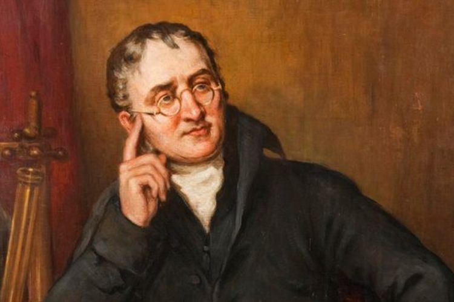
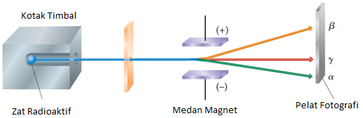

〰 tentang penulis 〰
hai semua nama gw andika dan selamat datang di rangkuman kimia saya aowkokwowk. Super Idol 的笑容 Super Idol de xiaorong 都没你的甜 dou mei ni de tian 八月正午的阳光 ba yue zhengwu de yangguang 都没你耀眼 dou mei ni yaoyan
selamat membaca artikel kita banh ✨
〰 Struktur Atom 〰
daftar isi :
apa itu atom
Atom adalah suatu satuan dasar materi, yang terdiri atas inti atom serta awan elektron bermuatan negatif yang mengelilinginya. Inti atom terdiri atas proton yang bermuatan positif, dan neutron yang bermuatan netral.
sejarah atom
Teori atom berubah seiring perkembangan waktu. atom pada zaman dulu tidak memiliki steruktur yang kompleks seperti sekarang, atom pertamakali dikenal pada 370 SM sebagai suatu partikel terkecil suatu materi. ingin mengetahui info lebih lanjut tentang atom ? yuk simak terus catatan ini sampai akarnya
✱ Teori Atom democritus (460-370 SM)
istilah atom pertama kali dikemukakan oleh ilmuwan bernama democritus pada abad ke-4 sebelum masehi. ia percaya bahwa semua materi tersusun oleh patrikel yang sangat kecil yang disebut atom. democritus mengajukkan teorinya sebagai berikut:
- materi tersusun atas bagian bagian yang sangat kecil
- atom dianggap ada dan bergerak di ruang kosong materi
- atom bersifat homogen, tidak dapat dipecah, dan tidak bisa dilihat
- namun ide ide dari democritus tidak menjelaskan sifat sifat kimia materi
teori atom democritus bisa digambarkan seperti batu bata yg dibubukan sampai ukuran terkecil, nah ukuran terkecil inilah yang disebut oleh atom pada zaman itu (460-370 SM)
✱ teori aristotle dan plato (484-358 SM)
mereka tidak percaya dengan atom teori democritus (suatu materi memiliki ruang kosong) karena mereka berpendapat bahwa materi tersusun dari sesuatu seperti api, air, dan udara
✱ teori atom dalton (1766-1844)
dalton menggambarkan atom bagaikan bola pejal. teori atom dalton meyatakan bahwa senyawa yang dapat dipecah menjadi dua atau lebih zat zat baru, harus memiliki dua atau lebih atom Atom yang berbeda jenis. fakta ini memungkin untuk massa unsur unsur yang berbeda yang bergabung secara kimia membentuk senyawa. asapun teori yang dikemukakan oleh dalton adalah :
- semua materi tersusun oleh suatu partikel bernama apaituatom
- atom-atom tidak dapat dilihat dan dihancurkan
- atom-atom suatu unsur memiliki massa, ukuran, dan sifat sifat yang identik
- atom-atom dengan perbandingan jumlah yang tetap, dapat bergabung menjadi molekul unsur atau senyawa
- dalam reaksi kimia, atom terpisah, bersatu, dan tersusun kembali. atom atom suatu unsur tidak pernah berubah menjadi atom atom unsur lain
dalam teori atom dalton dapat menjelaskan hukum kekekalan atau konservasi massa dan hukum perbandingan tetap
hukum konservasi massa : dalam reaksi kimia, unsur unsur yang merubah bentuk jadi senyawa sama dengan massa senyawa yang terbentuk & hukum perbandingan tetap : dalam molekul senyawa perbandingan massa atom atom penysusn molekul senyawa adalah tetap
penemuan partikel subatom
✱ gejala gejala partikel bermuatan
pada tahun 1899 marie curie berpendapat bahwa "atom dari zat zat tertentu akan mengalami pembelahan jika mengalami radiasi". fenomena ini ia namakan radioaktivitas sedangkan zat zat yang memancarkan radiasi disebut dengan radioaktif. percobaan nya dimulai dengan mengidentifikasi 3 jenis radiasi yaitu radiasi alfa(bermuatan +), beta, dan gamma. ketiga radiasi ini memancarkan menunjukan perilaku yang berbeda beda jika dilewatkan melalui pelat bermuatan listrik. pada percobaan tersebut radiasi alfa dan beta dibelokan oleh medan listrik, sedangkan radiasi gamma lurus terus. hal ini menyimpulkan bahwa radiasi alfa dan beta adalah bermuatan listrik, sedangkan gamma tidak memiliki muatan listrik
dari percobaan tersebut telah ditemukan bahwa partikel alfa bermuatan +2 (2 kali muatan beta), beta memiliki muatan -1, pembelokan sinar alfa terlihat lebih kecil dibandingan pembelokan sinar beta. hal ini membuktikan bahwa partikel alfa lebih berat dibanding partikel beta
✱ penemuan elektron
penelitian tentang atom dilanjutkan oleh J.J.Thompson. menurut beliau, atom adalah partikel berbentuk bulat bermuatan postif yang dipermukaannya tersebat elektron-elektron. teori atom thompson dapat digambarkan sebagai berikut

mengapa thompson beranggapan bahwa sebuah atom memiliki muatan positif dan negatif ? thompson melakukan eksperimen menggunakan sinar katoda. yaitu pada ujung katoda diberikan tegangan listrik yg begitu besar, sehingga menghasilkan cahaya. lalu cahaya berbelok setelah melewati magnet. hal ini membuktikan bahwa materi mempunyai muatan negatif

sampai sini kita dapat menyimpulkan perbedaan teori dari dalton dan teori atom dari thompson yaitu, di teori dalton tidak ditemukannya suatu partikel elektron dalam suatu materi. karena teori yang dikemukakan dalton adalah atom sebagai bola pejal biasa
✱ penemuan proton & neutron
penelelitian dilanjutkan oleh ilmuwan bernama rutherford dan hans geiger. mereka melakukan percobaan terhadap lempengan emas yang ditembaki sinar alfa. setelah sinar alfa berbenturan dengan lempengan emas, sinar alfa berbelok bahkan memutar arah. karena kejadian tersebut, rutherford menyimpulkan bahwa didalam inti atom terdapat partikel yang bermuatan positif. rutherford menamakan partikel tersebut sebagai inti atom atau nukleus
dari penelitian tersebut rutherford dan teman temannya mengetahui diameter dari atom emas, yaitu 10-E13 cm. atom sendiri berdiameter 10-E8 cm. dan jarak dari inti atom ke kulit elektron terdekat adalah 1/2 mil
inti atom berisi proton dan neutron dan elektron berpurar mengelilingi inti atom
nomor atom, nomor massa, dan lambang atom
✱ nomor atom
nomor atom (z) digunakan untuk menyatakan jumlah proton. semua atom dalam suatu unsur yang sama memiliki proton yang sama
✱ nomor massa
massa atom merupakan penjumlahan dari proton, neutron, dan elektron. tetapi karena massa elektron hanya 1/1.836 kali massa proton, maka massa elektron di abaikan
✱ lambang atom
lambang atom ditulis berdasarkan bahasa inggris, latin, atau yunani
isotop, isobar, isoton, dan isoelektron
✱ isotop
atom atom isotop adalah atom yang memiliki nomor atom yang sama, namun memiliki jumlah neutron yang berbeda
✱ isobar
isobar adalah atom atom yang nomor atom yang sama
✱ isoton
atom isoton memiliki jumlah proton yang sama
✱ isoelektron
atom isoelektron memiliki jumlah elektron yang sama